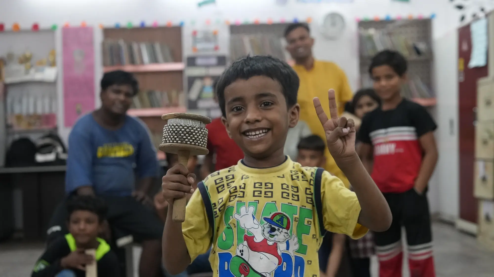

<section class="aangan-wrapper">
  <div class="container">

    <!-- Header -->
    <div class="aangan-header">
      <h2 class="title-heading mb-0">About Aangan Daycare</h2>
      <p class="subtitle">
        A safe space nurturing vulnerable street children since 2008
      </p>
    </div>

    <!-- Intro -->
     <div class="aangan-div">
      <div>
        <mat-card class="aangan-card" style="box-shadow: none;">
          <p>
            The daycare centre – <strong>Aangan</strong> – was started in 2008. Since then, we have been working directly with
            the most vulnerable street children through this centre. Streets are not a safe place for children, and Aangan
            provides an option for parents where they can send their children without worry.
          </p>
        </mat-card>
    
        <!-- Why Aangan -->
        <mat-card class="aangan-card">
          <h3><mat-icon>warning</mat-icon> Why Aangan is Important</h3>
          <p>
            When children are on the streets, they are prone to various forms of exploitation, harassment, and addiction.
            Aangan Daycare Centre at Daryaganj remains open from 10 AM to 6 PM, Monday to Saturday.
          </p>
        </mat-card>
      </div>
      <div class="aangan-img">
        
      </div>
     </div>

    <!-- Centre Details -->
    <div class="aangan-grid">
      <mat-card class="aangan-card">
        <h3><mat-icon>schedule</mat-icon> Timings</h3>
        <p>10 AM to 6 PM, Monday to Saturday</p>
      </mat-card>

      <mat-card class="aangan-card">
        <h3><mat-icon>groups</mat-icon> Children Groups</h3>
        <p>
          Recognizing the different needs of school-going and non-school-going homeless children, separate sets of
          activities are planned for each group.
        </p>
      </mat-card>

      <mat-card class="aangan-card">
        <h3><mat-icon>child_care</mat-icon> Age-based Activities</h3>
        <p>
          Different activities are designed for children below 12 years and above 12 years.
        </p>
      </mat-card>
    </div>

    <!-- Daily Impact -->
    <mat-card class="aangan-highlight">
      <h3><mat-icon>favorite</mat-icon> Daily Impact</h3>
      <p>This centre caters to the needs of <strong>30–50 children daily</strong>.</p>
    </mat-card>

    <!-- Education -->
     <div class="aangan-grid2">
       <mat-card class="aangan-card">
         <h3><mat-icon>school</mat-icon> Education & Counselling</h3>
         <p>
           Academic sessions are conducted for non-school-going children, designed with 21st-century skills in mind, and
           remedial education sessions are held for school-going children.
         </p>
         <p>
           Counselling is also provided to help children recover from trauma, stay motivated to improve their social
           standing, and develop individual goals.
         </p>
       </mat-card>
   
       <!-- Skills -->
       <mat-card class="aangan-card">
         <h3><mat-icon>palette</mat-icon> Skill & Creative Development</h3>
         <ul class="aangan-list">
           <li>Computer classes</li>
           <li>Sports</li>
           <li>Music</li>
           <li>Theatre</li>
           <li>Arts activities</li>
         </ul>
         <p>
           Children also participate in theatre activities to develop a theatre group and use theatre as a tool for
           self-expression.
         </p>
       </mat-card>
   
       <!-- Health -->
       <mat-card class="aangan-card">
         <h3><mat-icon>health_and_safety</mat-icon> Health & Family Engagement</h3>
         <p>
           Children's nutrition is taken care of at the daycare centre, and basic healthcare is provided through regular
           health check-ups.
         </p>
         <p>
           Monthly meetings with children and their parents help strengthen the communication channel between staff,
           children, and families.
         </p>
       </mat-card>
   
       <!-- Events -->
       <mat-card class="aangan-card">
         <h3><mat-icon>event</mat-icon> Events & Holistic Development</h3>
         <ul class="aangan-list">
           <li>Educational visits / picnics</li>
           <li>Carnivals / display of children’s work</li>
           <li>Quarterly drawing and sports competitions</li>
           <li>Annual cultural fest</li>
           <li>
             Devoted sessions using mediums like videos and theatre to reinforce the value system among children
           </li>
         </ul>
       </mat-card>
     </div>

  </div>
</section>
